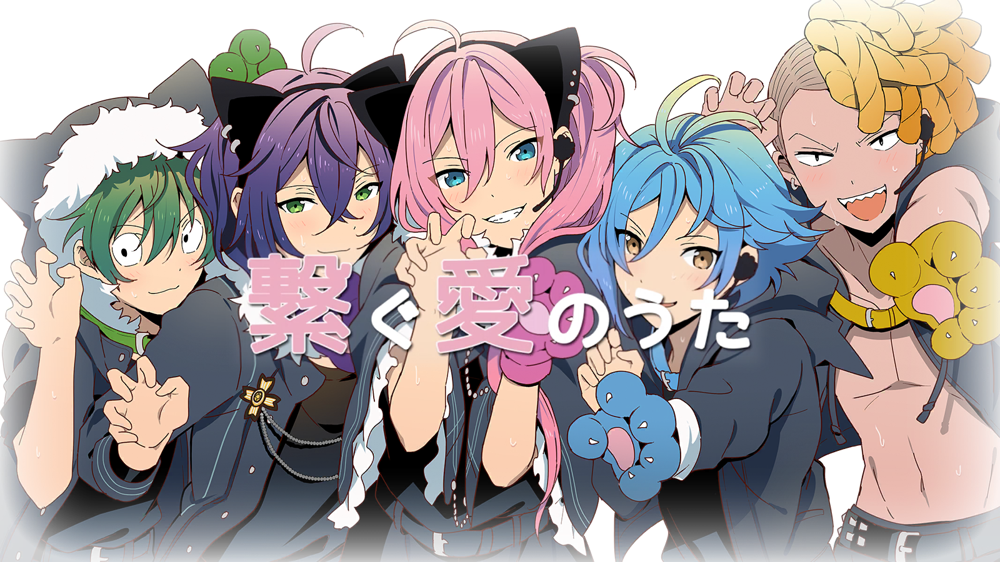

Heroines Run the Show: The Unpopular Girl and the Secret Task is airing NOW on CrunchyRoll and other streaming sites.
Use the Guide to HoneyWorks and start learning about Heroine Tarumono and Confession Executive Committee, the source song and series behind Heroines Run The Show now!
Guide to Honeyworks
Learn the songs. Learn their stories.
What is Honeyworks?
HoneyWorks (ハニーワークス, haniiwaakusu), also known as Haniwa (ハニワ), is an Japanese independent music circle
comprised of musicians and artists. Originating as a vocaloid circle (a group producing vocaloid content) in 2010,
the group made their professional debut in 2014 with their third album and first studio album Zutto Mae Kara Suki Deshita.
Today, HoneyWorks has created content for a variety of anime, including but not limited to "A Promise that Doesn't Need Words" (Naruto ED33),
"Sekai wa Koi Ni Ochiteiru" (Ao Haru Ride OP), and "Kessen Spirit" (Haikyuu!! ED4). However, they are most well known for their multi-media franchise,
Confession Executive Committee, a series meant to encapsulate a "youthful" and "shojo-like" feel.
Though HoneyWorks' main strengths lie in their songs and music videos, they produce a variety of media including -- but not limited to -- light novels, manga, and anime.
They have also released a Japanese mobile rhythm game called HoneyWorks Premium Live, where players can play beatmaps and read in-game stories related to the lives of characters from other HoneyWorks content.
Why the Guide to HoneyWorks?
HoneyWorks doesn't just work with a large variety of media. Most of the content HoneyWorks produces, regardless of the medium, tell a story. Sometimes, these
stories can be self-contained and standalone in a single song or music video. However, more often than not, characters and stories across the media are intertwined.
Characters who appear to be in standalone songs can be seen interacting with characters in main series songs. Characters who seem to be irrelevant background characters
become the main characters of their own arc. Songs aren't even released in chronological order, and that's not even looking at where media outside of the songs and music
videos come into the grand scheme of things.
Because Honeyworks' extended universe follows the stories of so many characters and across so many mediums, getting into
their content may be overwhelming to some. The Guide to Honeyworks is meant to help navigate someone new to HoneyWorks through the content they produce,
hopefully making it easier for a new viewer to catch up to the story and notice more subtle references and connections between HoneyWorks media.
How does the Guide work?
The Guide walks students through a structured version of experiencing HoneyWorks media, making sure a student has all necessary context before they reaches a certain media.
Along with the structured experience, all content experienced will include a lesson on what the story in the specific media is and who the characters involved are.
A majority of the content students will experience in full will be songs or music videos, but there will also be times when
a summary or explanation is given on longer media that are important to the story. Students will be given sources on how to access these seperate media should they choose to on their own.
All media provided will include English subtitles.
At the start of your journey, you have the option of receiving lessons about HoneyWorks themselves or jumping right into their
main series, the Confessions Executive Committee. From there, more lessons will be unlocked based on the characters and stories you have been introduced to, as well as new forums
to discuss with other students and fans of HoneyWorks.
What if I already know about HoneyWorks?
If you are already a fan of HoneyWorks, that's great!
While the Guide to HoneyWorks wants to introduce new students to HoneyWorks, we also want to help currate a community
of new and old fans alike.
If you are already familiar with HoneyWorks, you can join as an educator to help us refine our program and hold discussions in the forums with other new and old fans alike!
Upon passing a certain point, students also have the opportunity of acting as an educator in lessons they have completed as well!
 How does the Guide work?
How does the Guide work? What if I already know about HoneyWorks?
What if I already know about HoneyWorks?